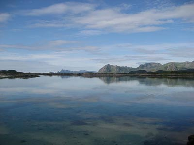

Lofoty

Lofoty leží na pobřeží Atlantiku, asi 100 až 300 kilometrů severně od severního polárního kruhu, tj. mezi 67. a 68. stupněm severní šířky. Od norské pevniny je souostroví odděleno Vestfjordem. Nejvýznamnější ostrovy jsou propojeny tunely a silničními mosty
Lofoty jsou součásti kraje (nor. fylke) Nordland a jejich hlavním městem je Svolvar nacházející se na ostrově Austvagoy. Na Lofotech se rozkládá celkem šest obcí (nor. kommunen): Vagan, Vestvagoy, Flakstad, Moskenes, Varoy a Rost.
Souostroví má přibližně 24 tisíc obyvatel, kteří žijí na ploše 1227 km2.
Severně a východně od Lofot se nachází další souostroví, Vesterály, které je od Lofot odděleno úžinou Raftsund, jejíž součástí je rovněž turisty oblíbený Trollfjord. Severní část ostrova Austvagoy je administrativně součástí obce Hadsel a je tudíž považována již za součást Vesterál.
Lofoty jsou obývané lidmi asi šest tisíc let. V minulosti se obyvatelé živili hlavně lovem a rybolovem. Během vikingské éry bylo postaveno mnoho osad se sídly vikingských náčelníků. Kopie náčelníkova sídla byla postavena v Borgu, kde je součástí vikingského musea.
Od čtrnáctého století ovládali obchod s rybami obchodníci z Bergenu. Bergen byl rovněž administrativním centrem vybírajícím daně. Kvalita života na Lofotech dlouhou dobu závisela na výsledcích rybolovu. Okolo roku 1860 došlo k největší přistěhovalecké vlně, která vedla ke vzniku současných sídel.
Zpět